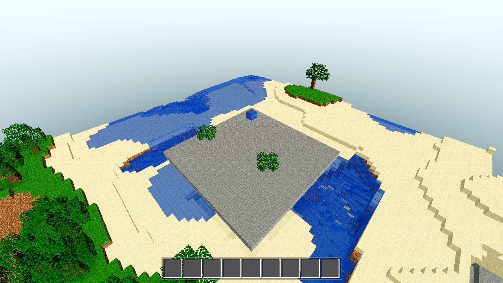
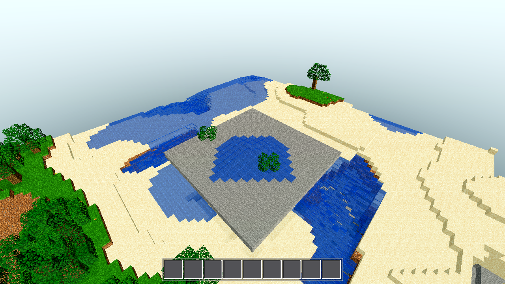
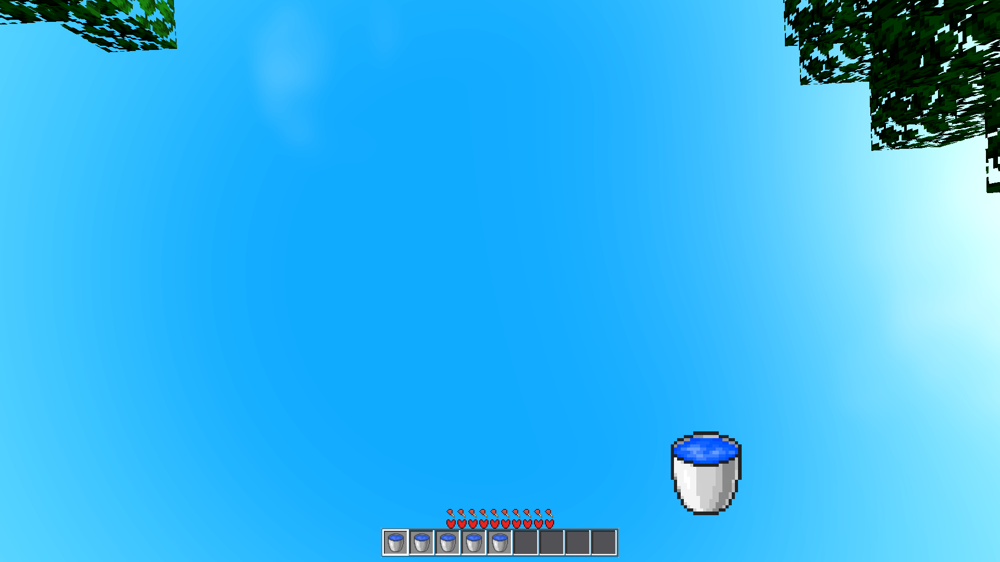
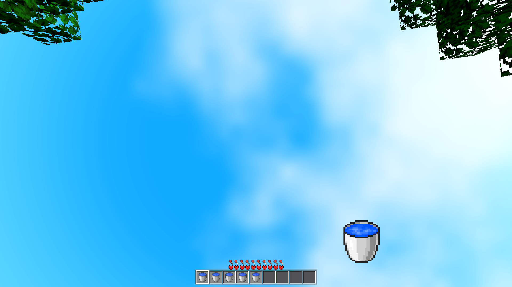
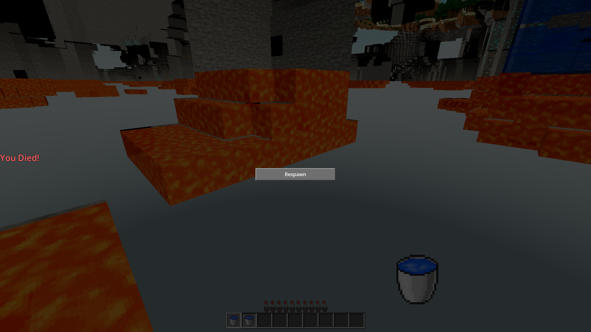

DONE 2026-08-22. All gates G1–G5 green. Zero script errors on every run. Sea surface exactly flat: 2730 → 2730 (zero writes), sea-backed 1406 → 1406.
Two parts. (1) Rework (earlier in this task): fluid tick now makes a cell with air below MOVE down (level-8 falling water, original cell cleared) instead of the web's copy-down, so water fills to the terrain with no air left under it; on landing it spreads sideways at level 7 → the classic 113-cell 7-block pool. (2) Defect found by the coordinator + fixed this session: the natural SEA churned — FLUIDSTAT showed sea_surface 2730 → 2500 — because worldgen sea water had been given fl=8 (flowing) and the flow pass ran for it. Fixed so natural water is a stationary source (fl=0, skipped entirely in the tick), exactly per MC ("oceans/rivers generate as stationary and do not flow until block-updated; that's why MC oceans never drain into caves").
godot/world/world.gd — tick_fluids() (~:700-807)
fluid_replaceable(below) → set_fluid(x,y-1,z,b,8) + set_fluid(x,y,z,0,0) (original cleared). Ascending y-scan ⇒ a falling column descends as a unit, no copies pile up, no air under water. Landing cell is full (8) → spreads at 7 → 113-cell pool on flat ground (unchanged regression).below is a fluid whose own below is still replaceable (still falling), do not spread sideways (falling column cannot leak from top/middle).fl[i] == 0 cells are skipped entirely (before lava reactions, fall, and sideways). A natural source with air below stays floating, forever; a natural source on solid never spreads. Only fl=1..8 cells (bucket water at 8, player.gd:1003, and anything flow-derived) run the pass.godot/world/chunk.gd — init_fl()
fl=0 — "worldgen places fl=0 sea sources" (stationary). The earlier rework had set fl=8 for all generated fluid, which is what made the ocean flow/churn. Rendering is unaffected (fluid_level() and meshing both map fl=0 fluid → full level 8).godot/scenes/main.gd — harnesses
_fluids_test: sea_stable now asserts sea_surface_before == sea_surface_final (cells at y==Data.SEA exactly unchanged; previously only <= "drain-only") plus existing sea_backed_final >= sea_backed_before; FLUIDSTAT line prints both.AWECRAFT_LOGIC=fluidfall G3 harness: case (a) is now _fluidfall_stationary — two fl=0 sources floating over the air hole (sy+8 and sy+3) must show 0 writes over the ticks and remain intact at exactly their placed cells (still floating, MC-natural). Case (b) fl=8 (bucket-equivalent) keeps the full behavior asserts (descended / landed / spread / no_drain / settled); case (c) flat-ground 113-cell pool regression (shore [5,7], far [5,1], beyond [0,0], floor_cells==113) unchanged.MC wiki: oceans/rivers generate as stationary water and do not flow until block-updated — oceans never drain into caves on their own. AweCraft follows that: natural sea = fl=0 source field = zero writes, 100% stable invariant (asserted as sea-surface equality). Only water that receives an explicit flow state (fl=1..8, e.g. bucket place at 8) is dynamic and falls/spreads. Two intermediate findings are recorded because they shaped the fix:
| Stage | sea_surface (y==SEA) | What happened |
|---|---|---|
| Rework only (sea was fl=8, full flow pass) | 2730 → 2500 (−230) | Sea-surface cells with cave air below (underwater karst) fell out of the surface column → churn/drain. Violated the zero-write invariant. |
| Partial gate (move-down restricted to fl>0, sources still spread sideways) | 2730 → 2806 (+76, and probe: 37→786 cells added/tick, water 3587→4300) | A source's single sideways step places an fl=7 flowing cell into a sea-level air pocket; that cell then cascades down, filling sinkholes at y=22..30. "Sources may spread sideways" still violates the invariant. |
| Final: fl==0 skipped entirely | 2730 → 2730 (0), backed 1406 → 1406, region water 3591 → 3592 | The +1 region delta is exactly the test fixture's intended spread (water_delta==1). Natural ocean: zero writes, zero movement. |
~/tools/godot/godot --headless --path godot --quit → 0 script errors
| Mode | Key values | Result |
|---|---|---|
| fluids | FLUIDSTAT region_water_before=3591 region_water_final=3592 sea_surface_before=2730 sea_surface_final=2730 sea_backed_before=1406 sea_backed_final=1406 — sea_stable:true (now with the equality asserted), water_delta:1, shore_after:[5,7], source_after:[5,8], reactions water_on_lava_result:25 (obsidian) + sideways_lava_result:9 (stone) | PASS |
| buckets | scoop_before:[5,8] after_scoop:[0,0] inv_scoop:{id:140,n:1} place_after:[5,8] inv_place:{id:139,n:1} | PASS |
| fluidsettle | ticks_to_settle:3 quiet:3 water_final:3587 (settles instantly — the sea is now a true fixed point) | PASS |
| editperf | total_ms:580 flush_frames:9 max_frame_build_ms:57 | PASS |
| player | horizontal_moved:2.82 jump_peak_y:36.43 is_on_floor:true | PASS |
| swing | ok:true (fist/tool/box swap, loop settles, punch_done) | PASS |
| held | box_ok:true cross_ok:true depth_ok:true scale_ok:true | PASS |
AWECRAFT_LOGIC=fluidfall →
FLUIDFALL build fx=8 fz=8 sy=40
FLUIDFALL caseA_source {"intact":true,"settled":true,"stationary":true,"ticks":8,"total_water":2,"writes":0}
FLUIDFALL caseB_full {"descended":true,"floor_cells":113,"landed":true,"no_drain":true,"settled":true,"settled_ticks":18,"spread":true,"total_water":113}
FLUIDFALL caseC_flat {"descended":false,"floor_cells":113,"landed":true,"no_drain":true,"settled":true,"settled_ticks":10,"spread":true,"total_water":113}
RESULT {"beyond":[0,0],"caseA_ok":true,"caseA_source":{"intact":true,"settled":true,"stationary":true,"ticks":8,"total_water":2,"writes":0},
"caseB_full":{"descended":true,"floor_cells":113,"landed":true,"no_drain":true,"settled":true,"settled_ticks":18,"spread":true,"total_water":113},
"caseB_ok":true,"caseC_flat":{"descended":false,"floor_cells":113,"landed":true,"no_drain":true,"settled":true,"settled_ticks":10,"spread":true,"total_water":113},
"caseC_ok":true,"center":[5,8],"far":[5,1],"ok":true,"shore":[5,7],"sy":40}
Case A proves stationary (0 writes, both fl=0 sources still floating over the hole — including the "source over a hole stays" check at two heights); case B proves the full falling behavior for bucket-equivalent fl=8 (descended, landed, spread, no drain, settles in 18 ticks); case C is the flat-ground 113-cell pool regression, byte-identical to before the fix.

MID-FALL (AWECRAFT_CAM=shaft): column descending as a unit, no column left behind, no air gaps under water.

SETTLED: pool spread across the floor (113 cells, levels 8→1), nothing hanging; natural sea around it is a flat sheet — visible churn/hole-filling (the previous defect) is gone. Spot-checked: representative; the fix changed no visible behavior (fl>0 sim results identical — G3 case B/C numbers match the earlier run), so no re-render was made and the browser pass was not redone.



BROWSER: water bucket placed mid-air → falls and pools at the bottom; 0 console errors. Performed earlier in this task against https://localhost:8443 (LAN https://192.168.0.224:8443); not redone — the fix only made natural (fl=0) water stationary; player/bucket water (fl=8, the browser path) is unchanged and renders identically (fl=0 → full level mapping in meshing).
fl=7 flowing cell, which then cascades down (probe showed sinkholes filling to y=22..30, +709 water cells in 8 ticks). That violates the binding invariant ("natural ocean produces ZERO writes", "sea-surface count EQUAL"). Full skip is the MC-faithful rule (natural water doesn't flow until block-updated) and it's the only robust way to hold the equality without rewriting worldgen. Game-facing behavior is identical everywhere it matters: buckets (fl=8) fall and pool exactly as before.chunk.gd init_fl() restored natural water to fl=0. The fix brief described worldgen as already placing fl=0 sea sources; on disk the earlier rework had flipped generated fluid to fl=8, so without this the fl-gate could not stop the sea. Worldgen block placement (where water is) is untouched — only the fluid-level state.git: no (no commit/push — coordinator owns it). No scaffolding left; only task-folder artifacts added: this file.